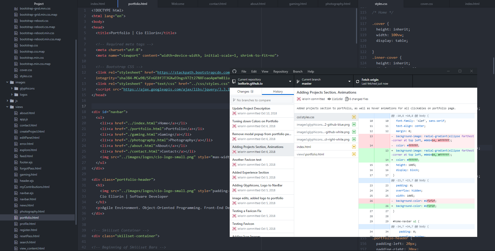
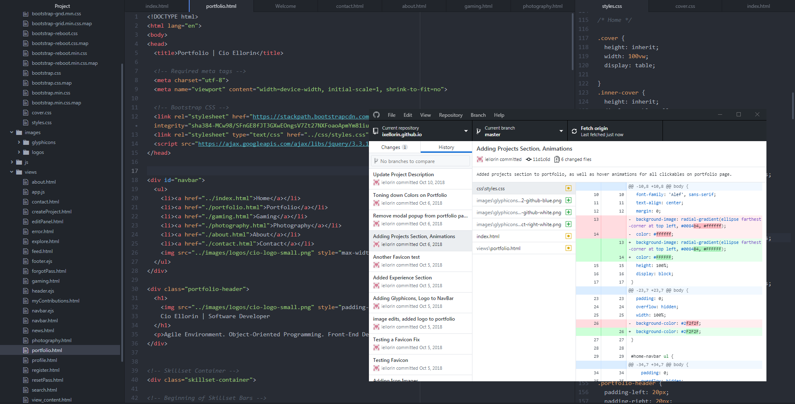
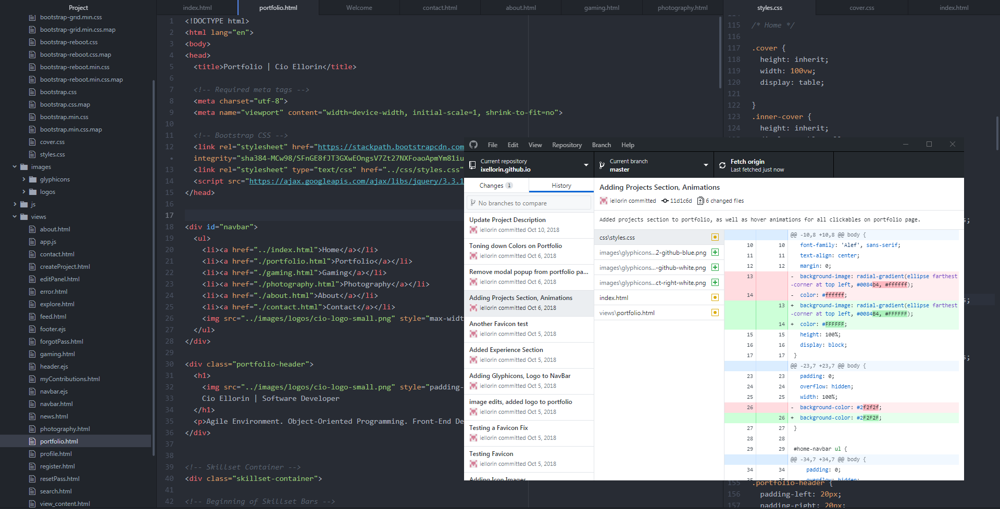
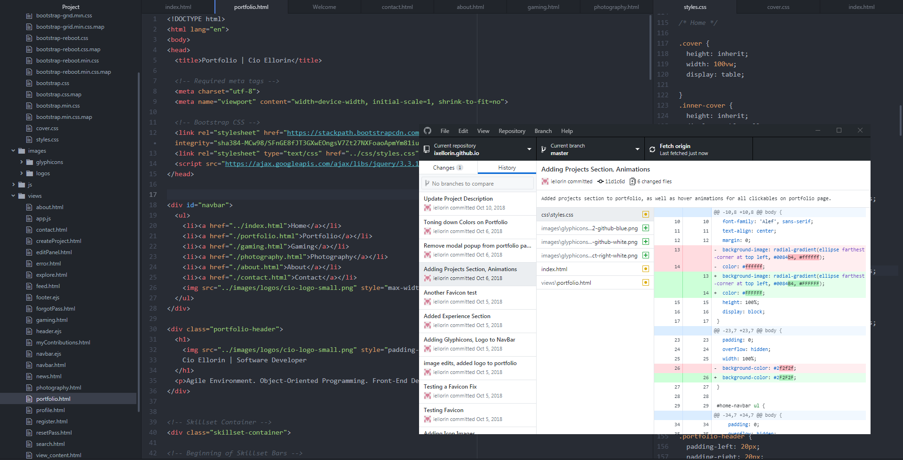

 

Hi! My name is Cio, and I'm a Software Developer by profession! My goal as a developer is to make beautiful software that clients love using, and enables them to achieve their goals! I love to work with a great team, but also have experience working independently, and have worked in full, agile development life cycles! In my free time, I enjoy playing video games, photography, hiking, and playing sports!
I am currently looking for a job! If you're interested in hiring me, I can be contacted via email.
iellorin@gmail.com or iellorin@hotmail.com
I loved video games ever since I was a kid. My uncle had bought my siblings and I a Nintendo 64, and I fell in love. From early on, I knew what I wanted to do when I grew up: I wanted to make video games. In high school, my IT class introduced me to a simple scripting tool called Guido Van Robot (GVR), and it was then that I realized it wasn't just video games that I wanted to create, I want to make anything do something, and I had that 'aha!' moment where I realized I just wanted to build software as a career!
I applied to the University of British Columbia's Faculty of Science, and, in my first year, declared my Major in Computer Science. I spent six years studying there, gaining 24 months of real work experience along the way through completing the Co-Op program. I worked in Vancouver for VISIER while it was still expanding, Access to Media Education Society - a non-profit organization, and I worked in Japan for eight months developing software for robotics researchers! I discovered that building beautiful software for clients is rewarding, and finally, here I am today!
JAN 2017 - AUG 2017 | KYOTO, JAPAN
Robot Control Software Developer (Project ERICA, Hiroshi Ishiguro Laboratories)- Java
MAY 2016 - AUG 2016 | VANCOUVER, BC
Web Developer, Designer - HTML, CSS
SEP 2014 - AUG 2015 | VANCOUVER, BC
Workforce Analytics Software Developer (co-op) - ActionScript, XML, Flex

While working in Japan, National Geographic came to our lab to film ERICA as part of their Year One Million documentary series, and I got to demonstrate (for a short while) an interaction with ERICA for them. The SYFY feature is available only in the US, but others can watch the full-length episode, and ERICA is featured at around 10:05.
JAN 2017 - AUG 2017 | KYOTO, JAPAN
Robot Control Software Developer (Project ERICA, Hiroshi Ishiguro Laboratories)- Java
MAY 2016 - AUG 2016 | VANCOUVER, BC
Web Developer, Designer - HTML, CSS
SEP 2014 - AUG 2015 | VANCOUVER, BC
Workforce Analytics Software Developer (co-op) - ActionScript, XML, Flex
When I was a kid, my uncle had bought my siblings and I a Nintendo 64; from early on, I knew what I wanted to do when I grew up: I wanted to make video games. I first programmed something in my high school IT class called Guido Van Robot (GVR), and it was then that I realized it wasn't just video games that I wanted to create, I want to make anything do something, and I had that 'aha!' moment where I realized I just want to build software as a career!
I applied to the University of British Columbia's Faculty of Science, and, in my first year, declared my Major in Computer Science. I spent six years studying there, gaining 24 months of real work experience along the way through completing the Co-Op program. I worked in Vancouver for VISIER while it was still expanding, Access to Media Education Society - a non-profit organization, and I worked in Japan for eight months developing software for robotics researchers! Finally, here I am today!
I am currently looking for a job! If you're interested in hiring me, I can be contacted via email.
iellorin@gmail.com or iellorin@hotmail.com